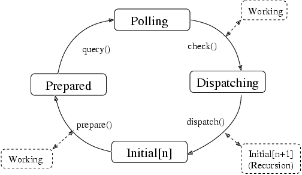

The Main Event Loop
The Main Event Loop
The main event loop manages all the available sources of events for GLib and
GTK applications. These events can come from any number of different types
of sources such as file descriptors (plain files, pipes or sockets) and
timeouts. New types of event sources can also be added using
g_source_attach().
To allow multiple independent sets of sources to be handled in different
threads, each source is associated with a GMainContext. A GMainContext
can only be running in a single thread, but sources can be added to it and
removed from it from other threads. All functions which operate on a
GMainContext or a built-in GSource are thread-safe.
Each event source is assigned a priority. The default priority,
G_PRIORITY_DEFAULT, is 0. Values less than 0 denote higher priorities.
Values greater than 0 denote lower priorities. Events from high priority
sources are always processed before events from lower priority sources.
Idle functions can also be added, and assigned a priority. These will be run whenever no events with a higher priority are ready to be processed.
The GMainLoop data type represents a main event loop. A GMainLoop is
created with g_main_loop_new(). After adding the initial event sources,
g_main_loop_run() is called. This continuously checks for new events from
each of the event sources and dispatches them. Finally, the processing of an
event from one of the sources leads to a call to g_main_loop_quit() to
exit the main loop, and g_main_loop_run() returns.
It is possible to create new instances of GMainLoop recursively. This is
often used in GTK applications when showing modal dialog boxes. Note that
event sources are associated with a particular GMainContext, and will be
checked and dispatched for all main loops associated with that GMainContext.
Libraries may contain wrappers of some of these functions, e.g.
gtk_main(), gtk_main_quit() and gtk_events_pending().
Creating new source types
One of the unusual features of the GMainLoop functionality is that new
types of event source can be created and used in addition to the builtin
type of event source. A new event source type is used for handling GDK
events. A new source type is created by “deriving” from the GSource
structure. The derived type of source is represented by a structure that has
the GSource structure as a first element, and other elements specific to
the new source type. To create an instance of the new source type, call
g_source_new() passing in the size of the derived structure and a table of
functions. These GSourceFuncs determine the behavior of the new source type.
New source types basically interact with the main context in two ways. Their
prepare function in GSourceFuncs can set a timeout to determine the
maximum amount of time that the main loop will sleep before checking the
source again. In addition, or as well, the source can add file descriptors
to the set that the main context checks using g_source_add_poll().
Customizing the main loop iteration
Single iterations of a GMainContext can be run with
g_main_context_iteration(). In some cases, more detailed control of
exactly how the details of the main loop work is desired, for instance, when
integrating the GMainLoop with an external main loop. In such cases, you
can call the component functions of g_main_context_iteration() directly.
These functions are g_main_context_prepare(), g_main_context_query(),
g_main_context_check() and g_main_context_dispatch().
State of a Main Context
The operation of these functions can best be seen in terms of a state diagram, as shown in this image.

On UNIX, the GLib mainloop is incompatible with fork(). Any program using
the mainloop must either exec() or exit() from the child without
returning to the mainloop.
Memory management of sources
There are two options for memory management of the user data passed to a
GSource to be passed to its callback on invocation. This data is provided
in calls to g_timeout_add(), g_timeout_add_full(), g_idle_add(), etc.
and more generally, using g_source_set_callback(). This data is typically
an object which ‘owns’ the timeout or idle callback, such as a widget or a
network protocol implementation. In many cases, it is an error for the
callback to be invoked after this owning object has been destroyed, as that
results in use of freed memory.
The first, and preferred, option is to store the source ID returned by
functions such as g_timeout_add() or g_source_attach(), and explicitly
remove that source from the main context using g_source_remove() when the
owning object is finalized. This ensures that the callback can only be
invoked while the object is still alive.
The second option is to hold a strong reference to the object in the
callback, and to release it in the callback’s GDestroyNotify. This ensures
that the object is kept alive until after the source is finalized, which is
guaranteed to be after it is invoked for the final time. The
GDestroyNotify is another callback passed to the ‘full’ variants of
GSource functions (for example, g_timeout_add_full()). It is called when
the source is finalized, and is designed for releasing references like this.
One important caveat of this second approach is that it will keep the object
alive indefinitely if the main loop is stopped before the GSource is
invoked, which may be undesirable.
Tutorial
GMainContext is complicated, and can be particularly intimidating for
developers new to working with GLib. Unfortunately, improper use of
GMainContext often results in bugs that may be difficult to debug. The
Main Contexts tutorial
provides valuable guidance for developers working with GMainContext
and is highly recommended reading. In particular, the section
Using GMainContext in a Library
documents several pitfalls that library authors should avoid.